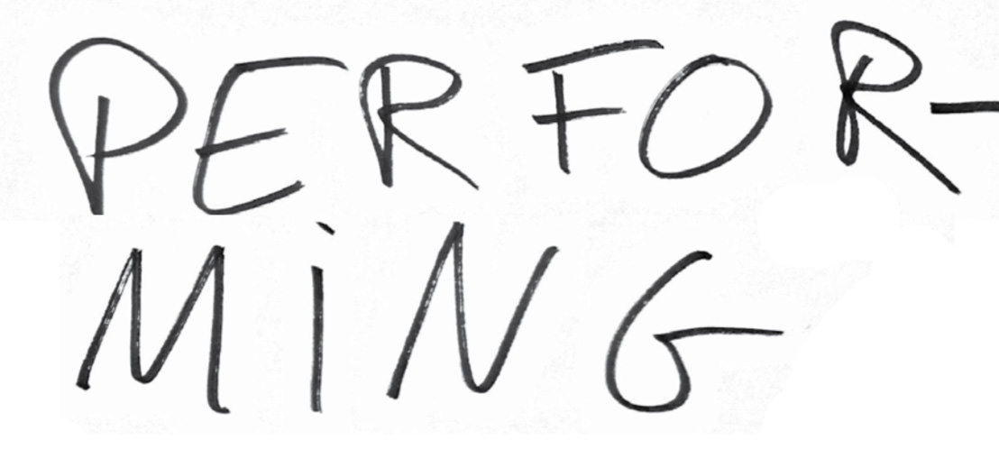

<!DOCTYPE html>
<html lang="en" dir="ltr">
  <head>
      <link rel="stylesheet" href="style.css">
    <meta charset="utf-8">
    <title></title>
  </head>
  <body>

  </body>
</html>
<body>

<p class="p2"><span class="s2"></span><br></p>
<p class="p3"><span class="s3">CRISE CONTEMPORAINE DE L'ATTENTION  -&gt; technologies ? Le problème de la DISTRACTION est produit par le capitalisme industriel qui doit aussi en proposer le remède.</span></p>
<p class="p3"><span class="s3">THIS IS NOT NEW!</span></p>
<p class="p3"><span class="s3">Jonathan Kerry / Nicholas Carr</span></p>
<p class="p2"><span class="s2"></span><br></p>
<p class="p3"><span class="s3">parler "droit" et avec clarté</span></p>
<p class="p2"><span class="s2"></span><br></p>
<p class="p3"><span class="s4">    </span></p>
<p class="p3"><span class="s4"><i>    je lui ai dit ça s'appelle un saxophone </i></span></p>
<p class="p3"><span class="s4"><i>    elle m'a répondu</i></span></p>
<p class="p3"><span class="s4"><i>    tu sais c'est pas très beau l'instrument que tu joues</i></span></p>
<p class="p3"><span class="s4"><i>    j'préfère la guitare</i></span></p>
<p class="p3"><span class="s4"><i>    </i></span></p>
<p class="p3"><span class="s4"><i>    je lui ai rien dit</i></span></p>
<p class="p3"><span class="s4"><i>    j'ai tourné la tête </i></span></p>
<p class="p3"><span class="s4"><i>    et puis j'ai pleuré</i></span></p>
<p class="p3"><span class="s4"><i>    elle était belle</i></span></p>
<p class="p3"><span class="s4">(bis)</span></p>
<p class="p3"><span class="s4"><i>la la la la </i></span></p>
<p class="p3"><span class="s4">(bis)</span></p>
<p class="p2"><span class="s2"></span><br></p>
<p class="p2"><span class="s2"></span><br></p>
<p class="p3"><span class="s3">Les "désordres de l'attention" infantile sont un outil de contrôle institutionnel. Les réponses des enfants sont placées dans des œufs</span></p>
<p class="p3"><span class="s3">-  "Comment imagines-tu l'avenir dans cent ans ?"</span></p>
<p class="p3"><span class="s3">- "Il n'y aura plus d'humain sur terre"</span></p>
<p class="p3"><span class="s3">- Qu'est-ce que notre réalité ?</span></p>
<p class="p3"><span class="s3">- "Notre réalité phénoménale est une forme de fiction"</span></p>
<p class="p3"><span class="s3">Nos perceptions la fabriquent : le cerveau compare, trie, recompose, analyse... </span></p>
<p class="p2"><span class="s2"></span><br></p>
<p class="p3"><span class="s3">il reprend un ton conférenciel pour parler d'un aspirateur relié à un signal électrique et à la table de mixage pour produire du son. L'aspirateur est utile pour ne pas encombrer le plateau de câbles. </span></p>
<p class="p3"><span class="s3">parfois on sent du vent dans les yeux. eh bien figurez vous que ça constitue</span></p>
<p class="p3"><span class="s3">une des preuves</span></p>
<p class="p2"><span class="s2"></span><br></p>
<p class="p3"><span class="s3">QUE LA TERRE TOURNE</span></p>
<p class="p2"><span class="s2"></span><br></p>
<p class="p3"><span class="s3">Notre cerveau ne peut pas tout capter de la réalité, il est donc obligé de combler les vides</span></p>
<p class="p2"><span class="s2"></span><br></p>
<p class="p2"><span class="s2"></span><br></p>
<p class="p2"><span class="s2"></span><br></p>
<p class="p3"><span class="s3">**********</span></p>
<p class="p2"><span class="s2"></span><br></p>
<p class="p2"><span class="s2"></span><br></p>
<p class="p2"><span class="s2"></span><br></p>
<p class="p2"><span class="s2"></span><br></p>
<p class="p2"><span class="s2"></span><br></p>
<p class="p2"><span class="s2"></span><br></p>
<p class="p3"><span class="s3">Laura insiste sur la variabilité de l'attention, sa dégradation en raison des technologies. CRISE CONTEMPORAINE DE L'ATTENTION</span></p>
<p class="p3"><span class="s5">THIS IS NOT NEW!</span></p>
<p class="p3"><span class="s5">" " Jonathan Kerry / Nicholas Carr / Bergson / Alan Kaprow</span></p>
<p class="p3"><span class="s5">Le problème de la DISTRACTION est produit par le capitalisme industriel qui doit aussi en proposer le remède.</span></p>
<p class="p3"><span class="s5">Laura Cull produit au contraire une attention très focusée par sa manière de parler "droit" et avec clarté</span></p>
<p class="p3"><span class="s5">Les "désordres de l'attention" infantile est un outil de contrôle institutionnelle selon Kerry</span></p>
<p class="p3"><span class="s5">Etymology of the verb "to attend" = to stretch (to stretch one's mind towards something). </span></p>
<p class="p3"><span class="s5">Une lumière qui oriente sur l'essentiel et vous coupe du monde.</span></p>
<p class="p2"><span class="s2"></span><br></p>
<p class="p2"><span class="s2"></span><br></p>
<p class="p3"><span class="s1">Antoine DefoortLe performer réclame une boisson en chantant, accompagné de ses deux doubles vidéo sur l'écran. Ils portent des vêtements démodés, au fond de l'image une sorte de décor qui fait penser à un garage.  </span></p>
<p class="p3"><span class="s1">il reprend un ton conférenciel pour parler d'un aspirateur relié à un signal électrique et à la table de mixage pour produire du son. L'aspirateur est utile pour ne pas encombrer le plateau de câbles. </span></p>
<p class="p2"><span class="s2"></span><br></p>
<p class="p3"><span class="s3">il monte sur le piano, saute, fait apparaite un autre écran sur le lequel d'abord on voit un texte apres</span></p>
<p class="p2"><span class="s2"></span><br></p>
<p class="p3"><span class="s3">écran : parfois on sent du vent dans les yeux. eh bien figurez vous que ça constitue</span></p>
<p class="p3"><span class="s3">une des preuves</span></p>
<p class="p3"><span class="s3">que la terre tourne</span></p>
<p class="p2"><span class="s2"></span><br></p>
<p class="p3"><span class="s1">Chanson : </span></p>
<p class="p3"><span class="s1">    </span></p>
<p class="p3"><span class="s1"><i>    je lui ai dit ça s'appelle un saxophone </i></span></p>
<p class="p3"><span class="s1"><i>    elle m'a répondu</i></span></p>
<p class="p3"><span class="s1"><i>    tu sais c'est pas très beau l'instrument que tu joues</i></span></p>
<p class="p3"><span class="s1"><i>    j'préfère la guitare</i></span></p>
<p class="p3"><span class="s1"><i>    </i></span></p>
<p class="p3"><span class="s1"><i>    je lui ai rien dit</i></span></p>
<p class="p3"><span class="s1"><i>    j'ai tourné la tête </i></span></p>
<p class="p3"><span class="s1"><i>    et puis j'ai pleuré</i></span></p>
<p class="p3"><span class="s1"><i>    elle était belle</i></span></p>
<p class="p3"><span class="s1">(bis)</span></p>
<p class="p3"><span class="s1"><i>la la la la </i></span></p>
<p class="p3"><span class="s1">(bis)</span></p>
<p class="p2"><span class="s2"></span><br></p>
<p class="p2"><span class="s2"></span><br></p>
<p class="p2"><span class="s2"></span><br></p>
<p class="p3"><span class="s6">SYNTHÈSE #1 - Cerebrum d'Yvain Juillard</span></p>
<p class="p2"><span class="s2"></span><br></p>
<p class="p3"><span class="s6">La question est posée à des enfants : "Comment imagines-tu l'avenir dans cent ans ?". Yvain Juillard est scientifique mains également comédien. Il image, il parle lentement...  Les réponses des enfants sont placées dans des œufs. Il en ouvre un : "Il n'y aura plus d'humain sur terre". De ce point de départ, il tire le sujet vertigineux de son spectacle : la vérité n'existe pas en science, c'est une quête infinie. Qu'est-ce que notre réalité ? Nos perceptions la fabrique : le cerveau compare, trie, recompose, analyse... "Notre réalité phénoménale est une forme de fiction". Notre cerveau est un "hyper-producteur", qui compose à partir d'une somme de facteurs : héritage socio culturel, de sensations, d'émotions...</span></p>
<p class="p2"><span class="s2"></span><br></p>
<p class="p3"><span class="s6">SYNTHESE #2 - Cerebrum d'Yvain Juillard</span></p>
<p class="p2"><span class="s2"></span><br></p>
<p class="p3"><span class="s6">Notre cerveau ne peut pas tout capter de la réalité, il est donc obligé de combler les vides, et donc d’interpréter. L'expérience de Libé met en évidence le fait qu'on agit parfois avant même d'en être conscient. "Nos souvenirs sont eux même l'objet d'une refabrication permanente, ils ne sont que la partie visible de notre mémoire". </span></p>
<p class="p2"><span class="s2"></span><br></p>
<p class="p2"><span class="s2"></span><br></p>
<p class="p2"><span class="s2"></span><br></p>
</body>
</html>
